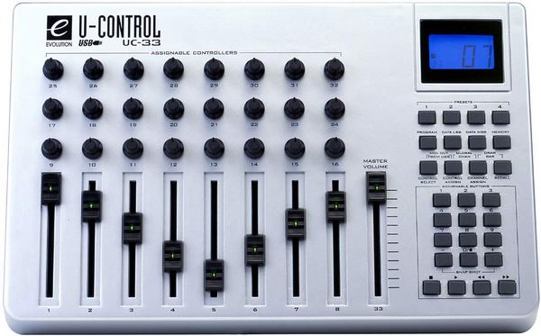
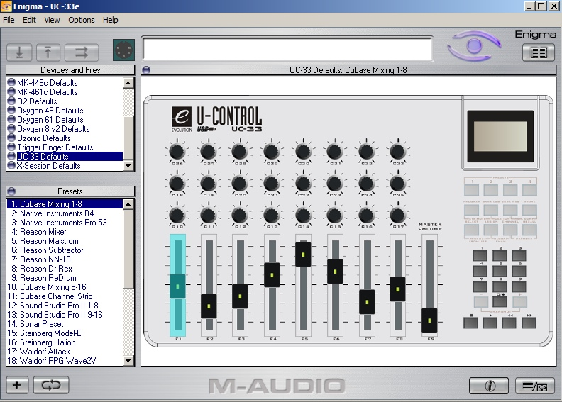
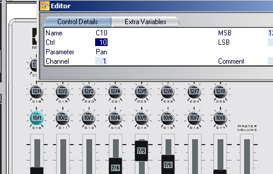
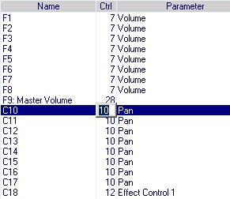
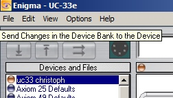

Elle est très légère par rapport à la BCF2000, et d'un encombrement plutôt correct: 33 cm x 21,3 cm x 7,6 cm.
Elle représente un investissement conséquent ( dans les 180 euros ) mais est la solution la plus interressante si vous avez besoin de beaucoup de contrôleurs en CC accessibles sans passer par les pages.
Le seul point noir: c'est une véritable horreur à reprogrammer en interne depuis l'interface. La chose devient beaucoup plus simple en utilisant le logiciel Enigma.
Cette interface a le gros avantage de posséder beaucoup de contrôleurs:
Ce layout étant éditable sur 4 pages de preset.
La documentation en français de l'UC-33e: http://fr.m-audio.ca/images/global/manuals/uc-33e_manuel_avance_french.pdf
La documentation en français d'Enigma: http://fr.m-audio.ca/images/global/manuals/Enigma_FR.pdf

Quelques machines dans certaines séries on besoin d'être resettées pour fonctionner correctement sur toutes les commandes.
Pour faire un reset de l'UC33e:



